เครื่องมือโค้ชผู้ขายไลฟ์
ระบบวิเคราะห์-โค้ชผู้ขายไลฟ์คอมเมิร์ซ ที่เปลี่ยน "ความรู้สึกลอยๆ ตอนจบไลฟ์" ให้เป็นสัญญาณจริง — อ่านอารมณ์โฮสต์ + คอมเมนต์สดด้วย ML บนเครื่อง, เตือนตรงจุด, แล้วส่งเฉพาะ derived signal ที่เข้ารหัสขึ้น cloud data-plane ที่ออกแบบให้ PDPA-first ตั้งแต่ architecture
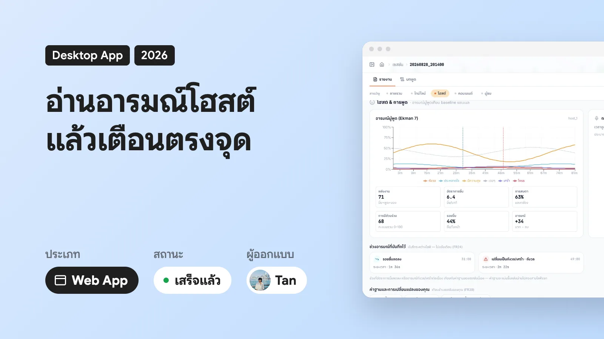
ระบบวิเคราะห์-โค้ชผู้ขายไลฟ์คอมเมิร์ซ: Desktop app (Electron) ที่ฝัง browser ดูไลฟ์, อ่านอารมณ์/รอยยิ้ม/ความสนใจของโฮสต์ด้วย ML บนเครื่อง พร้อมดูดคอมเมนต์สด แล้วส่งเฉพาะ derived signal ขึ้น cloud data-plane (NestJS) ที่เข้ารหัสและทำ PDPA compliance ครบ
ปัญหาที่เจอ
คนขายไลฟ์ต้องพูด ต้องขาย ต้องอ่านคอมเมนต์ที่ไหลรัว — พร้อมกันหมด แล้วจะรู้ได้ยังไงว่า "ตอนนี้" ควรทำอะไร?
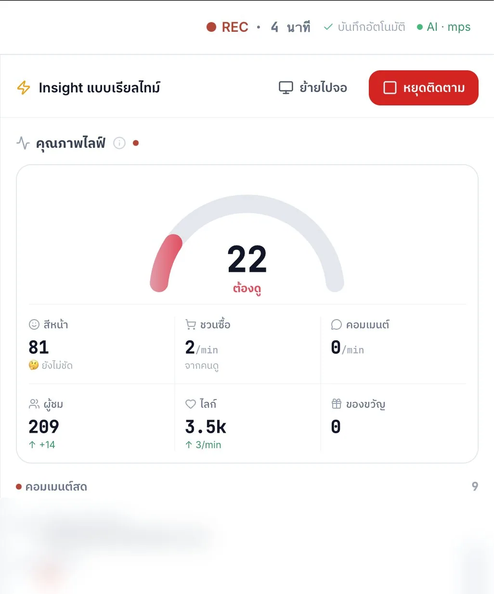
ระหว่างไลฟ์ โฮสต์มองไม่เห็นตัวเอง — ไม่รู้ว่าพลังงานเริ่มตก หน้าเริ่มเหนื่อย หรือมีคนถามราคาซ้ำๆ ที่ยังไม่ได้ตอบ คอมเมนต์ไหลเร็วเกินอ่านทัน พอจบไลฟ์ก็เหลือแค่ความรู้สึกลอยๆ ว่า "วันนี้เป็นไง" ไม่มีข้อมูลจริงให้ทบทวนหรือโค้ชต่อ
คอมเมนต์ไหลเร็วเกินอ่านทัน
ช่วงพีคคอมเมนต์วิ่งเป็นร้อยต่อนาที — คำถามราคา คำโต้แย้ง คำถามเรื่องของ ปนกันมั่ว โฮสต์ที่กำลังพูดอยู่จับประเด็นสำคัญไม่ทัน
โฮสต์มองไม่เห็นตัวเอง
พลังงานตก รอยยิ้มหาย หรือเริ่มไม่สบตากล้อง — สิ่งเหล่านี้กระทบยอดขายจริง แต่คนที่อยู่หน้ากล้องเป็นคนสุดท้ายที่รู้ตัว
จบไลฟ์แล้วทบทวนไม่ได้
ไม่มีบันทึกว่าช่วงไหนคนสนใจ ช่วงไหนคนหลุด อารมณ์กับคอมเมนต์สัมพันธ์กันยังไง — โค้ชข้ามวันเลยทำได้แค่ "รู้สึกเอา"
ข้อมูลอ่อนไหว — พลาดไม่ได้
ระบบแตะทั้งใบหน้า (biometric) และคอมเมนต์ผู้ชม เป็นข้อมูลที่ต้องขอ consent, เข้ารหัส, และลบได้ตาม PDPA — ทำครึ่งๆ กลางๆ ไม่ได้
ข้อมูลกระจัดกระจาย ต่อยอดไม่ได้
สัญญาณจากหลายไลฟ์อยู่เครื่องใครเครื่องมัน — ไม่มีที่รวมกลาง ทำให้เอาไปทำ report, โค้ชข้ามวัน หรือส่งต่อให้ระบบอื่นไม่ได้
วิธีแก้ปัญหา
ให้แอปเป็น "โค้ชเงียบ" — เฝ้าดูไลฟ์แทน, อ่านสัญญาณที่คนมองข้าม, แล้วเตือนเฉพาะสิ่งที่ทำได้จริงใน 60 วินาที
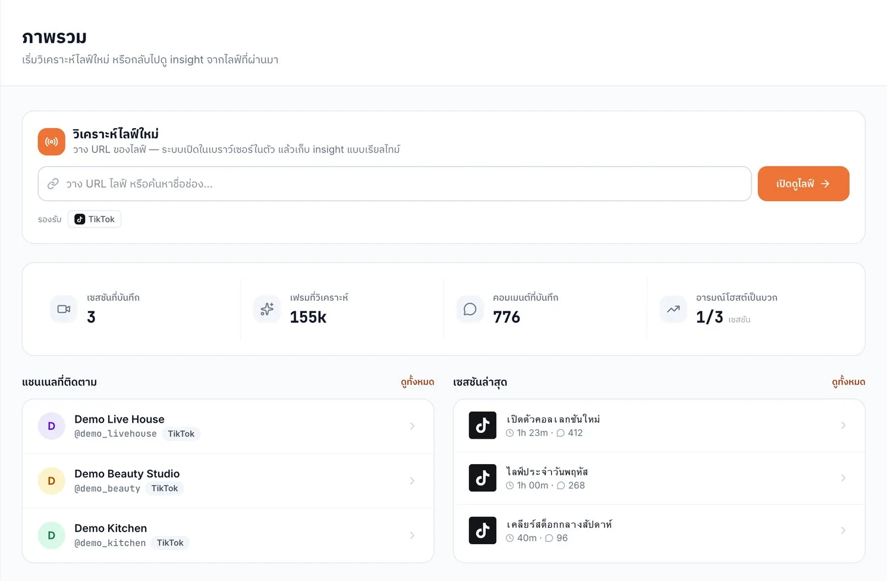
Desktop app ฝัง browser ดูไลฟ์ + ดูดคอมเมนต์
Electron + embedded Chromium เปิดไลฟ์ในแอปได้เลย ดึงคอมเมนต์/engagement สดผ่าน live-comment connector — ผูกช่อง ดูหลายไลฟ์ในที่เดียว
อ่านอารมณ์โฮสต์ด้วย ML บนเครื่อง
Local ML server (Python/FastAPI) อ่านใบหน้า — emotion, รอยยิ้ม, การพูด, การสบตากล้อง แบบ real-time โดยวิดีโอไม่ออกจากเครื่อง ส่งต่อแค่ตัวเลข
HUD เตือนสด แบบไม่กวน
Sidebar โชว์ KPI สด + เตือนเฉพาะสิ่งที่ทำได้ทันที (เช่น "มีคนถามราคาซ้ำ", "พลังงานเริ่มตก") — silent advisor ไม่ใช่ notification ถล่ม
Cloud data-plane เก็บสัญญาณ + compliance
Backend (NestJS) รับ derived signal ที่เข้ารหัส AES-256-GCM, ทำ consent / audit / erasure / k-anon ครบ — พร้อมต่อยอด report และโค้ชข้ามวัน
สัญญาข้อมูลล็อกด้วย contracts
Package @ไลฟ์ AI avatar/contracts นิยาม F1–F5 ด้วย JSON Schema 2020-12 + OpenAPI 3.1 + Ajv — desktop กับ cloud คุยกันตาม schema เดียวกัน ไม่หลุด sync
วิธีทำงาน — 4 จังหวะ
ตั้งแต่เปิดไลฟ์ จนได้สัญญาณสด + บันทึกที่เอาไปโค้ชต่อได้
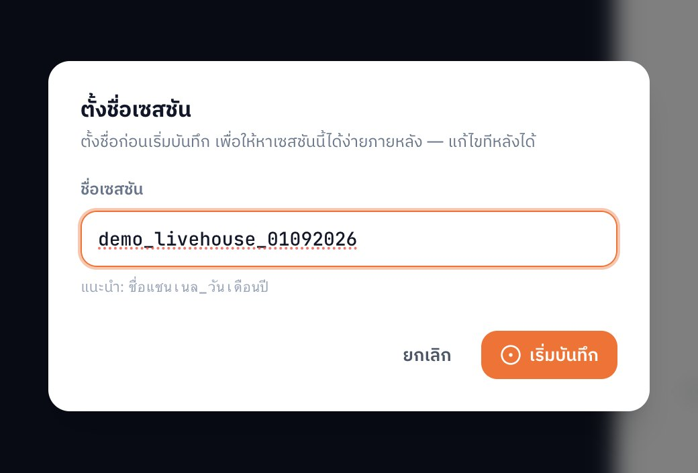
เปิดไลฟ์ในแอป
embedded browser เล่นไลฟ์ + ดูดคอมเมนต์/engagement สด
ML อ่านสัญญาณ
local server อ่านหน้าโฮสต์ + จัดหมวดเจตนาคอมเมนต์ บนเครื่อง
HUD เตือนสด
โชว์ KPI + advisor nudge · buffer เข้ารหัสไว้ก่อนแบบ offline
ส่งขึ้น cloud
push signal (idempotent) → report ย้อนหลัง + compliance
Tech Stack & Architecture
Monorepo (pnpm + turbo) 3 แอป + 1 contracts package — วิดีโอประมวลผลบนเครื่อง, ขึ้น cloud เฉพาะสัญญาณที่เข้ารหัส
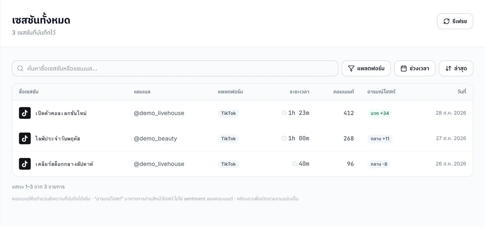
Monorepo (pnpm + turbo) ให้ desktop / backend / web และ contracts อยู่ที่เดียว แชร์ type ตรงกัน · NestJS แบบ hexagonal (ports/adapters) — แยก business logic ออกจาก store/KMS/alert-sink ทำให้ test และสลับ implementation ง่าย · Local ML server ประมวลผลวิดีโอบนเครื่อง — เร็ว + privacy (ภาพไม่ขึ้น cloud) · Contracts-first — schema เป็น source of truth กัน desktop/cloud หลุด sync ตั้งแต่ compile time
สิ่งที่สร้าง — 8 ความสามารถหลัก
ครบ loop ตั้งแต่ดักสัญญาณหน้าไลฟ์ ถึง compliance บน cloud
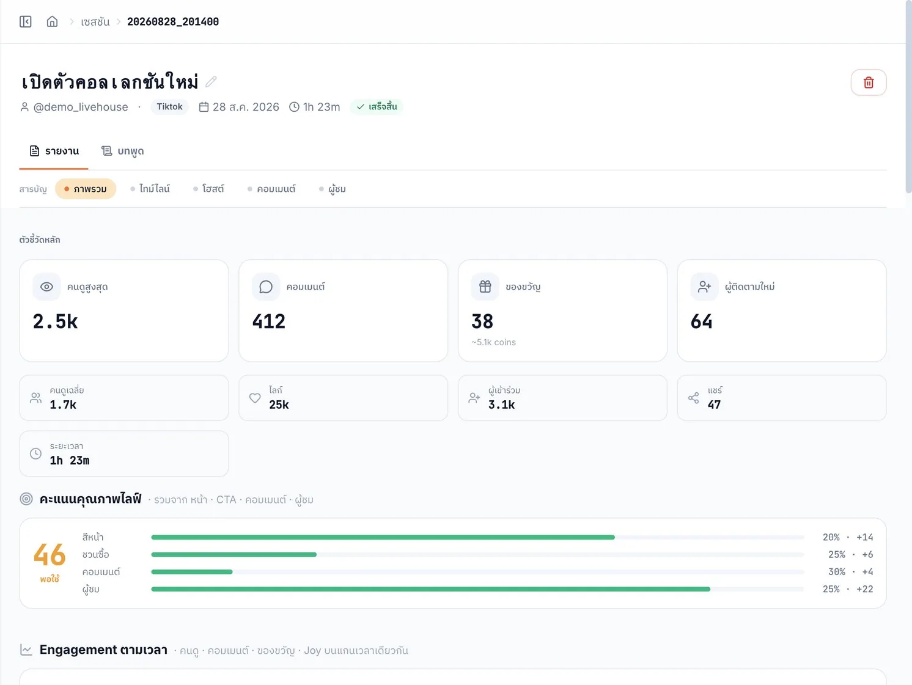
Embedded Live + Comment Scrape
Electron ฝัง browser เปิดไลฟ์ + ดึงคอมเมนต์/engagement สด ผูกช่องที่ติดตาม เปิดหลายไลฟ์ในแอปเดียว
Local Emotion / Identity ML
MediaPipe FaceMesh (52 blendshapes) + MTCNN/FaceNet enroll + ViT 7-class emotion — อ่าน smile/talking/looking real-time บนเครื่อง
Live KPI HUD
Sidebar โชว์ emotion / energy / smile สด + rolling window 1 นาที / 5 นาที ต่อ track — เห็นแนวโน้มระหว่างไลฟ์
Silent Advisor (60s nudge)
จับ signal ที่ทำได้ทันที เช่น price cluster ในคอมเมนต์ หรือพลังงานตก — เตือนแบบ suppress ไม่ถล่ม notification
Encrypted Offline Buffer
Buffer signal บนเครื่องแบบ offline-first แล้ว push ขึ้น cloud ด้วย high-water-mark — ส่งซ้ำได้แบบ idempotent เน็ตหลุดไม่ข้อมูลหาย
PDPA Consent + Erasure
Dual-layer consent gate ก่อนเก็บ + erasure worker ลบข้อมูลทุก store ตามคำขอ — biometric ต้องเข้ารหัสและถอนได้จริง
Tamper-Evident Audit
WORM sink + hash-chain ทำ audit log ที่แก้ย้อนหลังไม่ได้ + provenance export — พิสูจน์ที่มาของข้อมูลได้ตอนตรวจสอบ
F1–F5 Data Contracts
JSON Schema 2020-12 + OpenAPI 3.1 + Ajv validators + fixtures — versioned พร้อม compat check ป้องกัน breaking change ระหว่าง service
หน้าตา — Live Session HUD
ระหว่างไลฟ์ เห็นสัญญาณโฮสต์ + คอมเมนต์ + คำเตือนที่ทำได้ ในหน้าจอเดียว
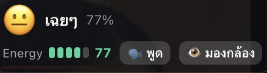
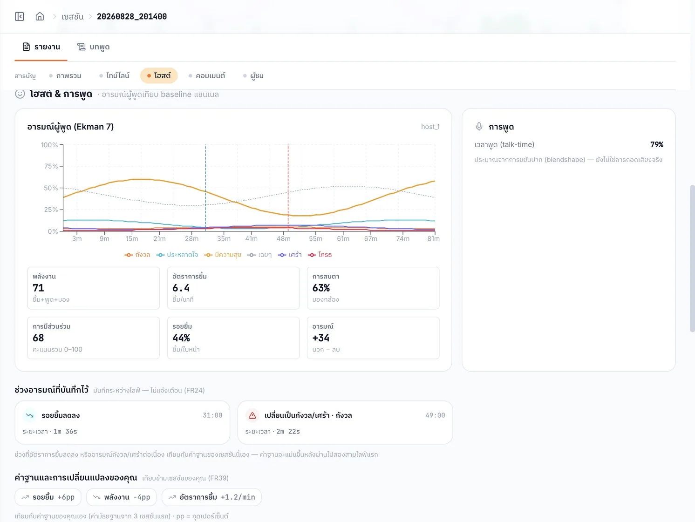
| สัญญาณ | ค่า | รายละเอียด | |
|---|---|---|---|
| Emotion | Happy 0.71 | smile · looking | HUD |
| Comment | ถามราคา ×3 | intent: price · cluster | alert |
| Energy | ↓ 0.48 | 5m rolling window | report |
POST /v1/ingest · { emotion:'happy', energy:0.48, intent:'price' } → 202 buffered
Hack กับปัญหา
6 โจทย์ที่ต้องคิดทางแก้เอง — real-time ML + privacy engineering + contracts ข้าม service
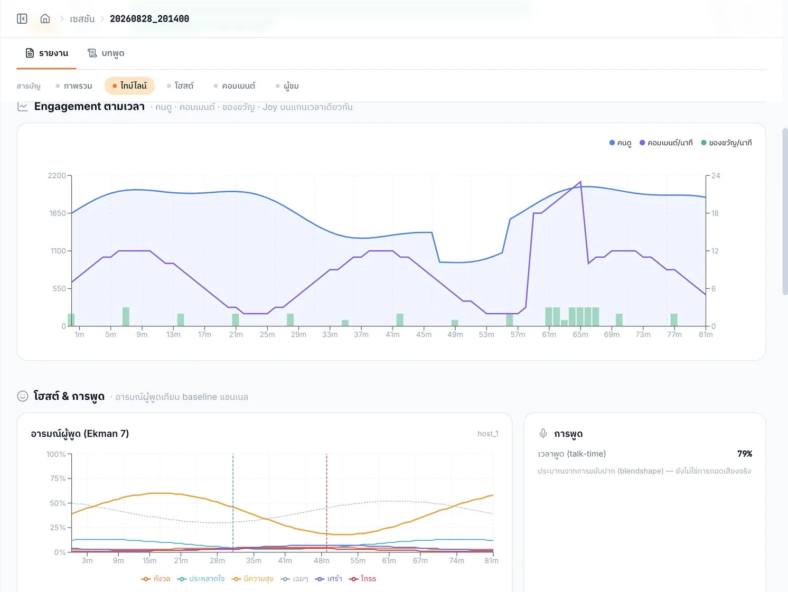
Raw emotion จากวิดีโอสด กระตุกและ noisy
ผลดิบจากโมเดล FER สั่นทุกเฟรม — โฮสต์ยิ้มนิดเดียวเด้งเป็น "happy 0.9" แล้วกลับเป็น neutral ทันที เอาไป trigger alert ตรงๆ ไม่ได้
neutral_bias / smile_boost / frown_gate แล้วกรองด้วย EMA smoothing + rolling window 1m/5m — ได้สัญญาณที่นิ่งพอจะเชื่อและเตือนได้จริง โดยรู้ข้อจำกัด (FER+ class-imbalance) ตั้งแต่ต้นอ่านหน้าโฮสต์ แต่ห้ามให้วิดีโอออกนอกเครื่อง
ใบหน้า = biometric ที่อ่อนไหวสุด — ส่งเฟรมขึ้น cloud ไปประมวลผลคือความเสี่ยงทั้ง privacy และ latency
localhost:8765) ประมวลผลบนเครื่อง ส่งต่อแค่ตัวเลข (emotion/energy/intent) ขึ้น cloud — 0 เฟรมวิดีโอออกนอกเครื่อง เป็นหลักการที่ตัดสินตั้งแต่ architectureDesktop กับ cloud หลุด sync กันง่าย
สองฝั่งคนละภาษา (TypeScript/Electron ↔ NestJS) — พอ payload เปลี่ยนฝั่งเดียว อีกฝั่งพังเงียบๆ ตอน runtime
@ไลฟ์ AI avatar/contracts — F1–F5 เป็น JSON Schema 2020-12 + OpenAPI 3.1 + Ajv validators + fixtures + compat check ในสคริปต์ ทำให้ breaking change ถูกจับตั้งแต่ CI ไม่ใช่ตอน productionML detector เร็วบน Windows(GPU) แต่ต้องรันบน mac ด้วย
YuNet detector บน onnxruntime CUDA เร็วมากบน Windows — แต่ mac arm64 ไม่มี CUDA wheel ให้ ลง requirement ตรงๆ จะพัง
sys_platform == "win32") ให้ onnxruntime-gpu ลงเฉพาะ Windows ส่วน mac fallback ไปที่ cv2.FaceDetectorYN (CPU) อัตโนมัติ — โค้ดชุดเดียวรันได้ทั้งสอง OS ไม่ต้องแตก branchเน็ตหลุดกลางไลฟ์ = signal หาย / ซ้ำ
ไลฟ์ยิงสัญญาณต่อเนื่อง แต่เน็ตช่วงไลฟ์ไม่เสถียร — ส่งไม่ถึงก็หาย ส่งซ้ำก็ข้อมูลเบิ้ล
high-water-mark per session — ฝั่ง ingest ทำ idempotent ตัด batch ที่ต่ำกว่า watermark ทิ้ง ส่งซ้ำได้ปลอดภัย ข้อมูลไม่หายไม่เบิ้ลข้อมูล biometric ต้องลบได้จริง + พิสูจน์ได้
PDPA ไม่ใช่แค่ "มีปุ่มลบ" — ต้องลบให้ครบทุก store จริง และต้องมีหลักฐานว่าใครทำอะไรกับข้อมูลเมื่อไหร่ ที่แก้ย้อนหลังไม่ได้
all-stores-registry ทุก adapter + audit log แบบ WORM + hash-chain (แก้ย้อนไม่ได้) + provenance export — consent, ลบ, และการพิสูจน์ ครบเป็นระบบ ไม่ใช่ feature แปะข้างDesign Decision ที่ตั้งใจเลือก
ขอบเขตที่จงใจ "ไม่ทำ" สำคัญพอๆ กับสิ่งที่ทำ — โดยเฉพาะเรื่องข้อมูลอ่อนไหว
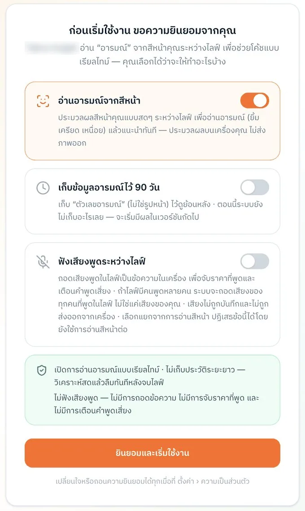
หลักที่ตัดสินตั้งแต่ต้น: วิดีโอและใบหน้าประมวลผลบนเครื่องเท่านั้น — cloud รับแค่ derived signal ที่เข้ารหัสแล้ว ไม่มีเฟรม ไม่มีภาพดิบ และทุกอย่างต้องขอ consent ก่อน, เข้ารหัสระหว่างทาง, และลบได้จริง ขอบเขตที่คมเรื่อง privacy = ตัดสินใจ implement ง่ายและ defend ได้
On-device inference
อ่านหน้าบนเครื่อง ส่งขึ้น cloud แค่ตัวเลข ไม่มีเฟรม
Consent ก่อนเก็บ
capture gate กั้นไว้ก่อน ไม่มี consent = ไม่เก็บ
เข้ารหัสตั้งแต่ buffer
AES-256-GCM ตั้งแต่บนเครื่องยันขึ้น cloud
Contracts-first
schema เป็น source of truth ไม่ใช่โค้ดฝั่งใดฝั่งหนึ่ง
Knowledge Domain ที่แข็งขึ้น
5 พื้นที่ความรู้ที่ระดับเราขยับขึ้นจริงจากการทำโปรเจกต์นี้
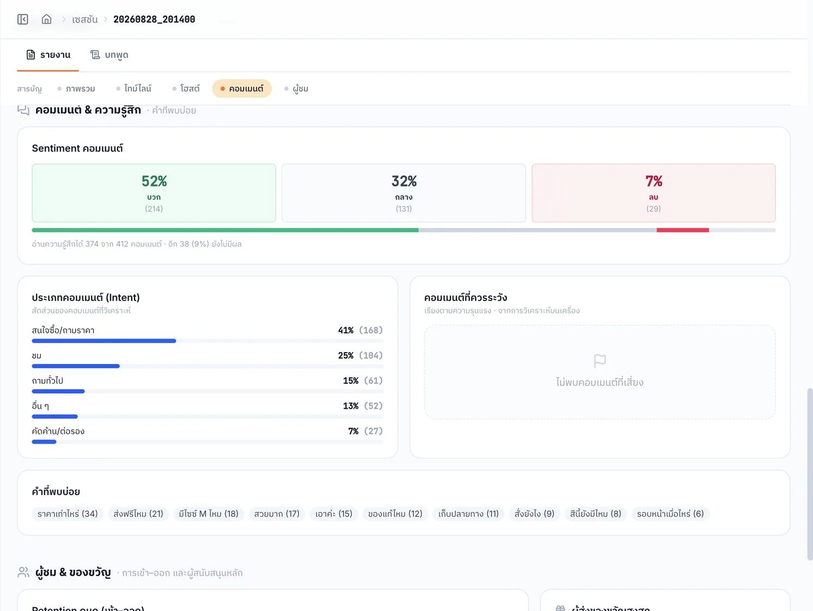
ต่อ pipeline จริง MediaPipe FaceMesh (blendshapes + head-pose) + MTCNN/FaceNet enroll + ViT-FER แล้วเรียนว่าผลดิบใช้ไม่ได้ตรงๆ — ต้อง calibrate (neutral_bias/smile_boost) + EMA + rolling window + เข้าใจ bias ของโมเดล บทเรียน: งาน ML ที่ใช้จริง 20% คือโมเดล อีก 80% คือ calibration + รู้ข้อจำกัด
วาง backend เป็น ports/adapters — business logic (ingest/consent/erasure/audit) ไม่รู้จัก Postgres/KMS/alert-sink ตรงๆ แต่คุยผ่าน port ทำให้ mock ใน test ได้ และสลับ implementation ได้ บทเรียน: hexagonal ทำให้ compliance logic ทดสอบได้โดยไม่ต้องมี infra จริง
ลงมือทำ consent 2 ชั้น, AES-256-GCM + KMS port, erasure ข้ามทุก store, WORM audit + hash-chain, k-anonymity, breach detection จริง — เข้าใจว่ากฎหมายข้อมูลแปลเป็นโค้ดยังไง บทเรียน: "ลบได้จริง + พิสูจน์ได้" ต้องออกแบบตั้งแต่ data model ไม่ใช่แปะทีหลัง
สร้าง contracts package versioned (JSON Schema 2020-12 + OpenAPI 3.1 + Ajv + fixtures + compat check) เป็นสัญญากลางระหว่าง desktop กับ cloud บทเรียน: schema เป็น source of truth จับ breaking change ได้ตั้งแต่ CI ถูกกว่าเจอตอน production หลายเท่า
คุม pnpm + turbo workspace 4 ตัว, electron-vite build, cross-platform ML (env marker), electron-builder ทำ dmg/nsis-web + auto-update บทเรียน: การ "ส่งของ" desktop app ที่มี native + ML dependency ยากกว่าที่คิด — env matrix, packaging, และ fallback ต้องคิดตั้งแต่ต้น